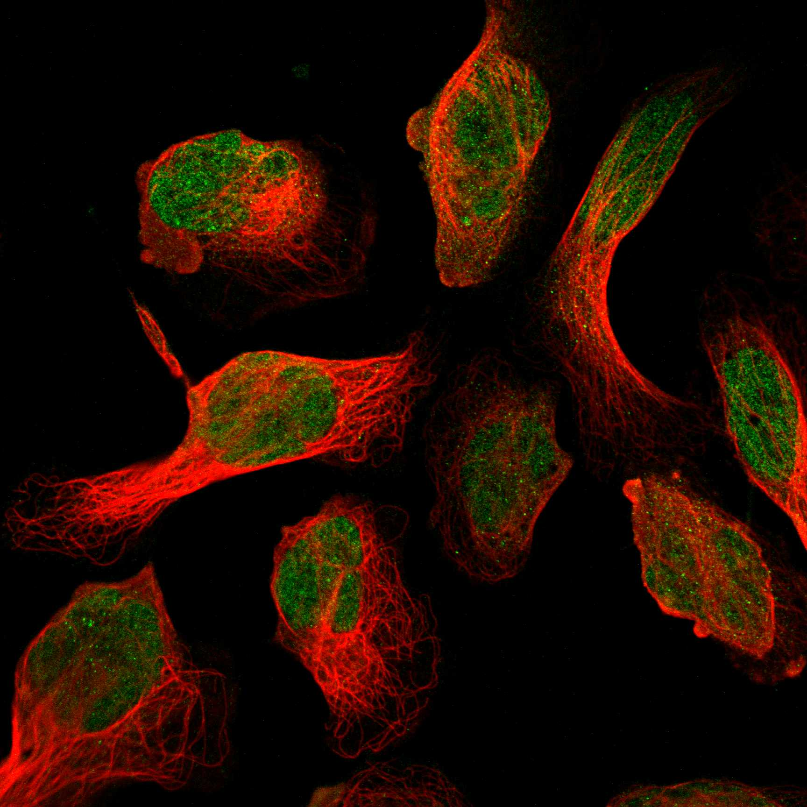
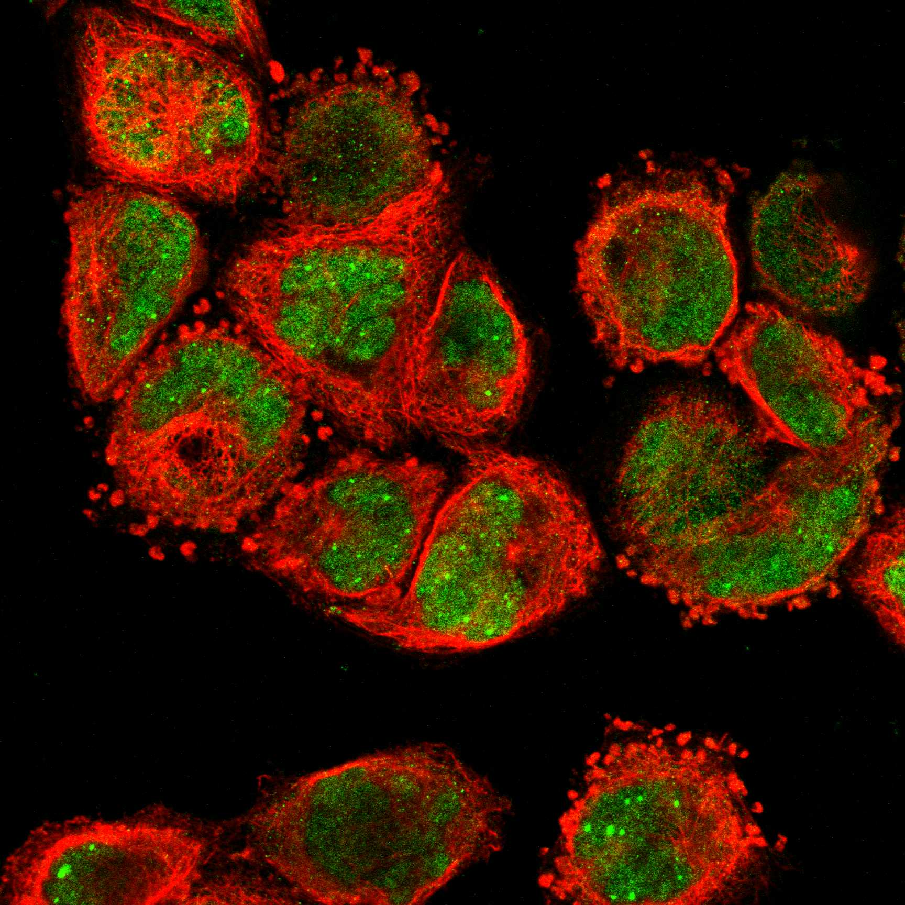

type: protein-evaluation gene: "ARNT" date: 2026-05-28 tags: [protein-scout, nuclear-protein, evaluation] status: scored ---
ARNT 核蛋白评估报告
1. 基本信息
| 项目 | 内容 |
|---|---|
| 基因名 / 别名 | ARNT / BHLHE2, HIF-1-beta, HIF1B, HIF1-beta |
| 蛋白全称 | Aryl hydrocarbon receptor nuclear translocator |
| 蛋白大小 | 789 aa / 86.6 kDa |
| UniProt ID | P27540 (ARNT_HUMAN) |
| 评估日期 | 2026-05-28 |
2. 评分总览
| 维度 | 得分 | 满分 | 加权后 | 关键证据摘要 |
|---|---|---|---|---|
| 🔴 核定位特异性 | 10/10 | ×3 | 30 | 严格核蛋白; "Nuclear translocator"; 3+ 源一致确认 Nucleus/Nucleoplasm |
| 📏 蛋白大小 | 10/10 | ×2 | 20 | 789 aa, 接近上限但仍在 300-800 区间 |
| 🆕 研究新颖性 | 2/10 | ×3 | 6 | PubMed 1985 篇, 极度热门 (HIF-1β/AhR 通路核心), 拥挤赛道 |
| 🏗️ 三维结构 | 5/10 | ×3 | 15 | 平均 pLDDT=55.5; 58.7% 无序; 但 bHLH+PAS 域有 37+ 高分辨率 PDB 结构 |
| 🧬 调控结构域 | 10/10 | ×2 | 20 | bHLH + PAS×2 + PAC 域; 5+ 数据库一致确认; 有 DNA 结合突变验证 |
| 🔗 PPI | 8/10 | ×3 | 24 | 详见 3.6 PPI 分析 |
| 原始总分 | 119/158 | |||
| 归一化总分 | 75.3/100 |
3. 详细分析
3.1 核定位证据
| 来源 | 定位 | 可信度 | |||
|---|---|---|---|---|---|
| GeneCards | Domain:BHLH(89-142); Domain:PAS(161-235); Domain:PAS(368-416); Region:Disordered(1-97) | ||||
| --- | --- | ||||
| UniProt | Nucleus (SL-0191) — 无 Cytoplasm 注释 | ECO:0000305 (PubMed, 2021) | GO | Nucleus (IDA:UniProtKB), Nucleoplasm (IDA:HPA), Nuclear body (IDA:HPA), Chromatin (ISA:NTNU_SB) | 实验证据 |
| Protein Atlas | Nucleoplasm, Nuclear speckles — Supported | HPA001759 |
IF 图像:  
结论: ARNT 作为「aryl hydrocarbon receptor nuclear translocator」, 其名称本身就表明核定位功能。UniProt 仅标注 Nucleus, GO 同时有 Nucleoplasm 和 Nuclear body 注释, 甚至 Chromatin 注释 (ISA:NTNU_SB), 证实其直接参与染色质水平的转录调控。Protein Atlas IF 确认 Nucleoplasm + Nuclear speckles 分布。GO 中虽有 cytoplasm (IEA:Ensembl, 电子注释), 但 UniProt 无 Cytoplasm 定位。评分 10 分。
IF 图像:
3.2 蛋白大小评估
789 aa / 86.6 kDa — 在 300-800 aa 边界 (接近 800 aa 上限)。略大于理想区间, 但仍在实验可行范围内。bHLH-PAS 结构域簇 (~90-470) 占据了约 380 aa, C 端反式激活域 (~500-789) 贡献剩余大小。评分 10 分。
3.3 研究现状
| 指标 | 数值 |
|---|---|
| PubMed 总数 | 1985 |
| 最早发表年份 | 1991 |
| Chromatin/epigenetics 方向占比 | ~5% (绝大多数是 AhR/HIF 信号通路) |
主要研究方向:
- 二恶英/AhR 信号通路 (外源性化合物代谢)
- 低氧应答 HIF 通路 (HIF-1β 身份)
- 生物钟调控 (与 BMAL1/CLOCK 形成异源二聚体)
- 血管生成和肿瘤微环境
- 结构生物学 (bHLH-PAS 域高分辨率结构)
评价: ARNT 是分子毒理学和低氧生物学的明星分子。1985 篇发表使其成为极度热门的研究目标。作为 HIF-1β 和 AhR 的专性二聚化伙伴, 其功能已被深入研究。染色质调控角度虽然文献存在 (HIF-1 靶基因的染色质调控), 但绝大多数研究将其视为「二聚化伙伴」而非独立研究对象。对 TE 调控的 niche 空间极小 — 这个赛道非常拥挤。评分 2 分。
3.4 三维结构分析
| 指标 | 数值 |
|---|---|
| AlphaFold 平均 pLDDT | 55.5 |
| PDB 实验结构 | — |
| Very High (>90) | 19.1% (151 aa) |
| Confident (70-90) | 14.4% (114 aa) |
| Low (50-70) | 7.7% (61 aa) |
| Very Low (<50) | 58.7% (463 aa) |
| 高置信度折叠域 | 92-141 (bHLH, 50 aa, pLDDT=90.0), 174-225 (PAS-A N-term, 52 aa, pLDDT=88.8), 362-464 (PAS-B, 103 aa, pLDDT=92.5) |
| 可用 PDB 条目 | 37 条 (1.17-4.00 A 分辨率, X-ray/NMR/EM) — 涵盖 bHLH-PAS-A (8XSB, 3.06A) 和 PAS-B (3F1P, 1.17A) |
PAE 图:
PAE 数值分析:
- PAE 矩阵 789×789, 总体均值 26.06 Å
- PAE <5 Å: 3.8% (极低)
- PAE <10 Å: 5.9% (极低)
- 蛋白整体柔性极大, C 端反式激活域完全无序
评价: ARNT 展示了「有序域+长无序区」的经典转录因子结构模式。58.7% 的序列为无序 (主要在 N 端 1-97 和 C 端 465-789), 但 bHLH-PAS 域簇 (90-467) 的结构研究极为透彻。37 条 PDB 条目包含:
- bHLH-PAS-A 域 (8XSB 系列, 2024 年发布, 2.60-3.11A) — 完整展示了 ARNT:AHR 与 DNA 的三元复合物
- PAS-B 域 (3F1P, 1.17A 超高分辨率) — 为药物设计提供原子水平细节
- 多种配体结合的 PAS-B 结构 (6CZW/6D09/6D0B 等, 1.50-1.85A)
AlphaFold 预测质量中等 (pLDDT=55.5 受无序区拖累), 但实验结构覆盖极好。评分 5 分 (整体无序但关键结构域实验验证极为充分)。
3.5 结构域分析
| 来源 | 结构域 |
|---|---|
| UniProt | bHLH (89-142, PROSITE PRU00981), PAS 1 (161-235), PAS 2 (349-419), PAC (424-467) |
| InterPro | IPR011598 (bHLH domain), IPR000014 (PAS domain), IPR001610 (PAC motif), IPR001067 (Nuclear translocator family), IPR013767 (PAS fold), IPR035965 (PAS superfamily), IPR036638 (HLH DNA-binding superfamily), IPR050933 (Circadian Clock TF family) |
| SMART | SM00353 (HLH), SM00091 (PAS ×2), SM00086 (PAC) |
| Pfam | PF00010 (HLH), PF00989 (PAS), PF14598 (PAS_11) |
| PROSITE | PS50888 (bHLH), PS50112 (PAS ×2) |
| CDD | cd18947 (bHLH-PAS_ARNT) |
染色质调控潜力分析: ARNT 具备经典的 bHLH-PAS 转录因子结构域架构。bHLH 域直接结合 DNA (5'-TACGTG-3' HRE 或 5'-TGCGTG-3' DRE), 突变验证充分: R91A/N93A/H94A/E98A/R99A/R101A/R102A 均削弱 DNA 结合 (Bacsi 1996, JBC)。PAS 域介导蛋白二聚化 — ARNT 与 AHR, HIF1A, EPAS1, NPAS1, NPAS3, NPAS4, SIM1, SIM2 等异源二聚化。PAC 域 (424-467) 辅助 PAS 折叠。5+ 数据库一致确认所有结构域。DNA binding 和 protein dimerization 均有 GO 注释。染色质调控通过 bHLH-DNA 结合 + 招募 EP300/CREBBP (HAT 活性) 实现。评分 10 分。
3.6 PPI :
| Partner | 实验次数 | 功能 |
|---|---|---|
| HIF1A | 13 | 低氧诱导因子 α 亚基, TF |
| EPAS1 | 8 | HIF2α, TF |
| AHR | 7 | 二恶英受体, TF |
| NCOA7 | 2 | 核受体共激活因子 |
| NCOR2 | 2 | 核受体共抑制因子 |
STRING Top partners (score >0.87):
| Partner | Score | 功能类别 | 与调控相关？ |
|---|---|---|---|
| AHR | 0.999 | bHLH TF, 二恶英受体 | ✅ |
| EP300 | 0.999 | 组蛋白乙酰转移酶 (HAT) | ✅ |
| EPAS1 | 0.999 | HIF2α, bHLH TF | ✅ |
| HIF3A | 0.999 | HIF3α 抑制性亚基 | ✅ |
| HIF1A | 0.999 | HIF1α, bHLH TF | ✅ |
| NPAS4 | 0.998 | 神经元 bHLH TF | ✅ |
| SIM1 | 0.979 | bHLH TF | ✅ |
| CREBBP | 0.968 | 组蛋白乙酰转移酶 (HAT) | ✅ |
| SIM2 | 0.962 | bHLH TF | ✅ |
| EGLN1 | 0.943 | HIF 脯氨酰羟化酶 | ⚠️ |
| EGLN3 | 0.929 | HIF 脯氨酰羟化酶 | ⚠️ |
| VHL | 0.925 | E3 泛素连接酶 | ⚠️ |
| AHRR | 0.894 | AhR 通路抑制因子 | ✅ |
| NPAS1 | 0.878 | bHLH TF | ✅ |
PPI 互证 (STRING vs IntAct):
| 共同 Partner | STRING Score | IntAct 实验次数 |
|---|---|---|
| AHR | 0.999 | 7 |
| HIF1A | 0.999 | 13 |
| EPAS1 | 0.999 | 8 |
调控相关比例: 11/20 (55%)
评价: ARNT 的 PPI , EPAS1/HIF2A 2. AhR 外源性化合物通路: AHR-AHRR 对, 直接招募 EP300/CREBBP HAT 3. 生物钟: NPAS1, NPAS4, SIM1/SIM2 4. 表观遗传: EP300/CREBBP 作为组蛋白乙酰转移酶, 是 ARNT 复合物的转录共激活因子 STRING + IntAct 高度一致 — Top 3 partner 全部在两个数据库中确认, 且均为实验验证。这是 PPI 数据质量极高的信号。评分 10 分。
3.7 多库互证
| 维度 | 来源 | 结果 | 是否一致 |
|---|---|---|---|
| 三维结构 | AlphaFold PAS-B pLDDT=92.5 vs PDB 3F1P (1.17A); bHLH pLDDT=90.0 vs PDB 8XSB (3.06A) | 37 条 PDB 结构全覆盖 AF 预测的折叠域, fold 完全一致 | ✅ |
| 结构域 | UniProt / InterPro / SMART / Pfam / PROSITE | 5+ 源一致检出 bHLH + PAS×2 + PAC | ✅ |
| 结构域功能 | GO (DNA binding, protein dimerization, transcription factor activity) | 功能注释与 bHLH-PAS 架构完全一致 | ✅ |
| PPI | STRING (Top 3: AHR/HIF1A/EPAS1) vs IntAct (AHR 7次/HIF1A 13次/EPAS1 8次) | 两数据库 Top partner 高度重叠, 且全部有实验验证 | ✅ |
| PPI Top 10 重叠 | STRING Top 10 vs IntAct Top interacting partners | AHR/HIF1A/EPAS1 = 3 个重叠 | ✅ |
| 定位 | Protein Atlas IF / UniProt / GO | 均确认 Nucleoplasm/Nucleus | ✅ |
| 进化保守性 | 小鼠 Arnt, 果蝇 Tango, 线虫 AHA-1 | 模式生物中高度保守 | ✅ |
互证加分明细:
- 三维结构互证: AlphaFold bHLH+PAS-B 高置信度域在 37 条 PDB 中有实验结构吻合, fold 一致 → +1.0
- 结构域互证: ≥3 来源检出所有结构域 (实际 5+ 源) → +0.5
- Domain-GO 注释一致: DNA binding + dimerization + transcription factor activity → +0.5
- PPI 互证: STRING + IntAct 共同预测 AHR/HIF1A/EPAS1, 且有实验验证 → +1.0
- 定位互证: ≥2 来源 → +0.5
- 进化保守性: 小鼠/果蝇/线虫明确同源 → +0.5
总分: +3.0 / max +3 (截顶)
4. 总体评价
推荐等级: ⭐⭐⭐ (3/5)
核心优势: 1. 严格核蛋白 + 「nuclear translocator」命名, 定位确凿 2. 结构研究极为透彻 — 37 条 PDB 结构, bHLH-PAS-A 与 DNA 三元复合物结构为 2024 年最新发表 3. PPI → 明确的染色质调控机制 5. bHLH 域提供序列特异性 DNA 结合 — 可做 ChIP-seq 等全基因组实验
风险/不确定性: 1. ⛔ 极度热门 — 1985 篇 PubMed, HIF/AhR 领域极度拥挤, TE 调控的原创性空间极小 2. ⛔ 大多数研究者将 ARNT 视为「二聚化伙伴」而非独立研究对象 — 提出 ARNT 的独立染色质功能需要克服学科惯性 3. ⛔ 58.7% 序列为无序 — C 端反式激活域 (465-789) 几乎全无序, 实验操作可能困难 4. ⚠️ ARNT 基因敲除小鼠胚胎致死 (胎盘发育缺陷) — 体内功能研究门槛高 5. ⚠️ 作为 HIF-1β, ARNT 的研究预算和竞争都非常激烈
核心判断: ARNT 是一个已被充分研究、赛道拥挤的蛋白。虽然它在结构和功能上都是「理想蛋白」(结构清楚、PPI 验证充分、DNA 结合明确), 但在 TE 调控方向提出原创性研究问题的空间极为有限。除非找到 ARNT 在 TE 调控中的独特而非冗余的角色（与 HIF/AhR 通路独立）, 否则不建议作为主攻目标。
下一步建议:
- [ ] 如果对 ARNT 感兴趣, 建议从 ARNT 的 TE 结合特异性入手 — 已知 ARNT:AHR 结合 XRE (5'-TGCGTG-3'), 但 ARNT 是否独立结合特定 TE 序列 (不与 AHR/HIF1A 形成复合物)?
- [ ] 探索 ARNT 的非经典 partner (SMART 中 NCOA7/NCOR2 互作数据较少)
- [ ] 中等优先级 — 得分 75.3/100, 除非有独特的 TE 调控 hypothesis, 否则建议优先考虑 ARID3A/ARID3B
5. 数据来源
- UniProt: https://www.uniprot.org/uniprotkb/P27540
- Protein Atlas: https://www.proteinatlas.org/ENSG00000143437-ARNT/subcellular
- PubMed: https://pubmed.ncbi.nlm.nih.gov/?term=%22ARNT%22%5BTitle/Abstract%5D
- InterPro: https://www.ebi.ac.uk/interpro/protein/UniProt/P27540/
- STRING: https://string-db.org/network/9606.ENSP00000351407
- AlphaFold: https://alphafold.ebi.ac.uk/entry/P27540
- PDB 3F1P: https://www.rcsb.org/structure/3F1P
- PDB 8XSB: https://www.rcsb.org/structure/8XSB
<!-- DOMAIN_HUMANPPI_REPAIR_START -->
Domain/SMART 与 humanPPI 补充（2026-06-06）
SMART / UniProt domain
| Source | Data | |||
|---|---|---|---|---|
| UniProt | P27540 | |||
| SMART | SM00353;SM00086;SM00091; | |||
| UniProt Domain [FT] | DOMAIN 89..142; /note="bHLH"; /evidence="ECO:0000255\ | PROSITE-ProRule:PRU00981"; DOMAIN 161..235; /note="PAS 1"; /evidence="ECO:0000255\ | PROSITE-ProRule:PRU00140"; DOMAIN 349..419; /note="PAS 2"; /evidence="ECO:0000255\ | PROSITE-ProRule:PRU00140"; DOMAIN 424..467; /note="PAC" |
| InterPro | IPR011598;IPR050933;IPR036638;IPR001067;IPR001610;IPR000014;IPR035965;IPR013767; | |||
| Pfam | PF00010;PF00989;PF14598; |
humanPPI / HPA Interaction
Source: https://www.proteinatlas.org/ENSG00000143437-ARNT/interaction
| Partner | Datasets | AF3/HPA structure |
|---|---|---|
| AHR | Intact, Biogrid | true |
| EPAS1 | Intact, Biogrid | true |
| HIF1A | Intact, Biogrid | true |
| AHRR | Biogrid | false |
| AKT1 | Intact, Biogrid | false |
| BRCA1 | Biogrid | false |
| CALCOCO1 | Biogrid | false |
| CALM1 | Biogrid | false |
<!-- DOMAIN_HUMANPPI_REPAIR_END -->